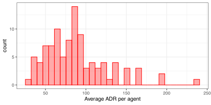
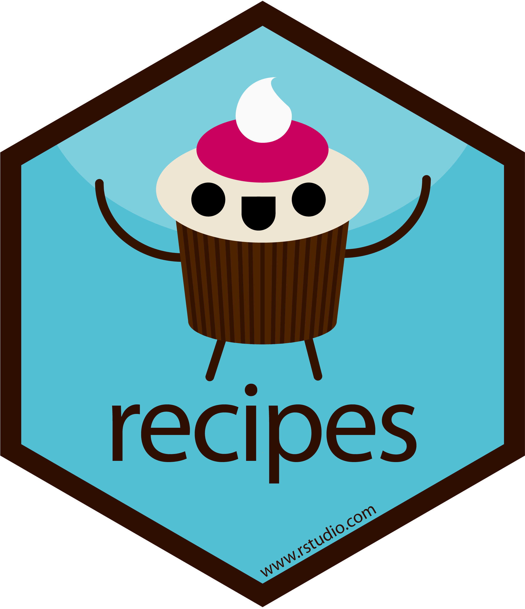

Extras - Effect Encodings
Advanced tidymodels
Per-agent statistics


Per-agent statistics again


Good statistical methods for estimating these means use partial pooling.
Pooling borrows strength across agents and shrinks extreme values towards the mean for agents with very few transations
The embed package has recipe steps for effect encodings.
Agent effects  

It is very important to appropriately validate the effect encoding step to make sure that we are not overfitting.
Effect encoding results 


hotel_effect_wflow <-
workflow() |>
add_model(linear_reg()) |>
update_recipe(hotel_effect_rec)
reg_metrics <- metric_set(mae, rsq)
hotel_effect_res <-
hotel_effect_wflow |>
fit_resamples(hotel_rs, metrics = reg_metrics)
collect_metrics(hotel_effect_res)
#> # A tibble: 2 × 6
#> .metric .estimator mean n std_err .config
#> <chr> <chr> <dbl> <int> <dbl> <chr>
#> 1 mae standard 17.8 10 0.189 Preprocessor1_Model1
#> 2 rsq standard 0.870 10 0.00357 Preprocessor1_Model1Slightly worse but it can handle new agents (if they occur).